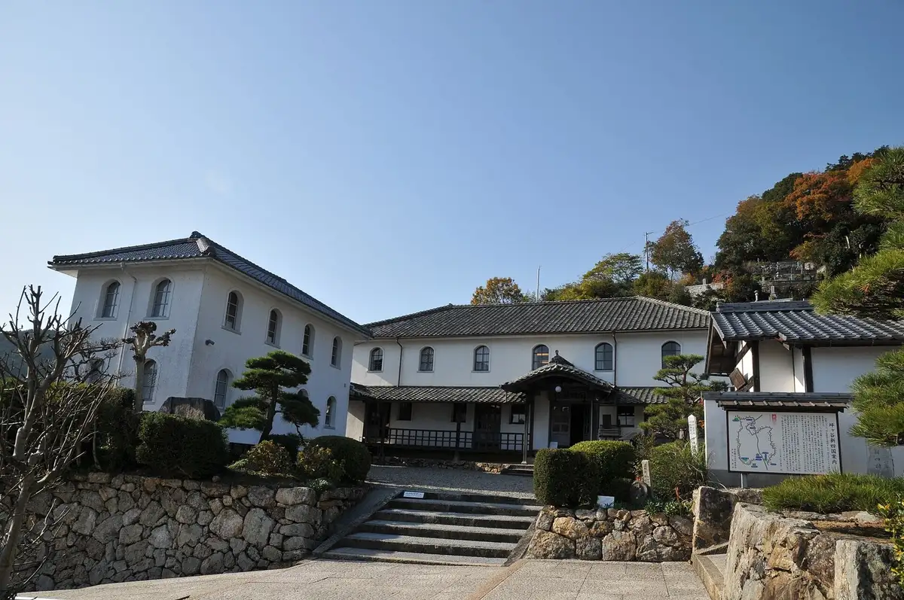
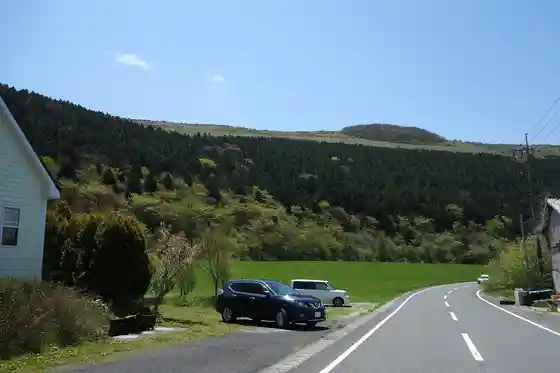
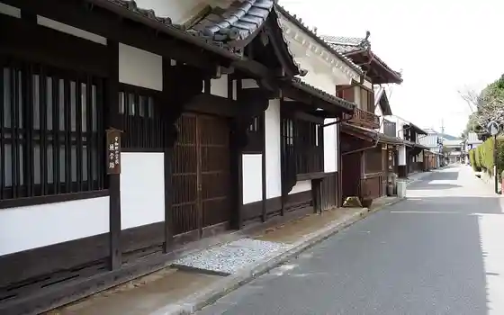
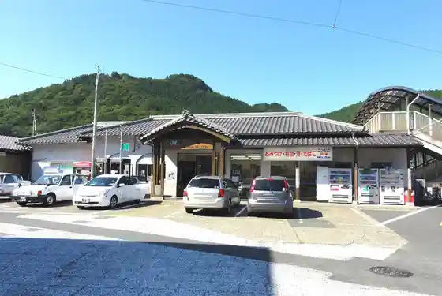

Seiyo
Seiyo · Ehime
Seiyo
Highlighted on the Ehime map.

Stay
Uwa Park Hotel & Uwa Sauna
seaside Uwakai
Dai 1 Bijinesu Hotel Matsuya
Mikame Honkan
Omeguri Iori
entohouse bar&guesthouse ^
atelier O-HUIS
Dining
DINING-KITCHEN Kura
Mori no Sakana
Tonkatsu Maru Shichi Ehime Mise
Bar Ento
Daikokuya
Waraguro
Niwasaki cafe Sora
Ai Warai
Akehama Re
Hamonii Kirara
Tsuchii Ie Kura
Howaito Farm
Hana Kashi Mise
Yuboku Tami
Furusato Sosei Kan
Sharuru
Onsen
Uwa Park Hotel & Uwa Sauna Matsuba Baths
Mikame Honkan Public Bath
atelier O-HUIS Onsen
Sights
Kaimei Gakko
Onogahara

U Yuki Town no Streetscape

U Yuki Town Eki
